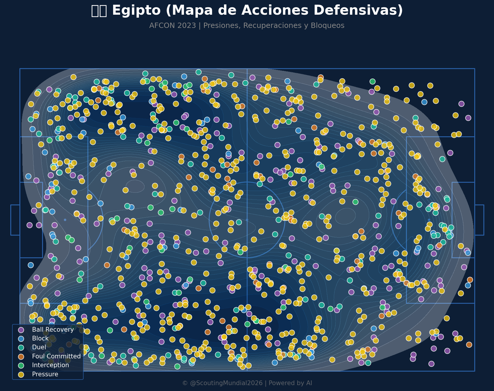
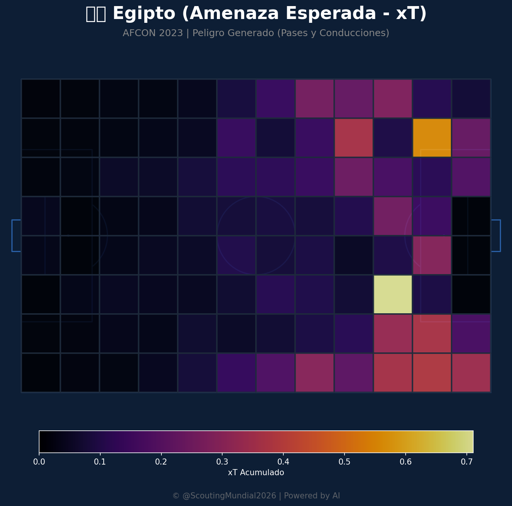
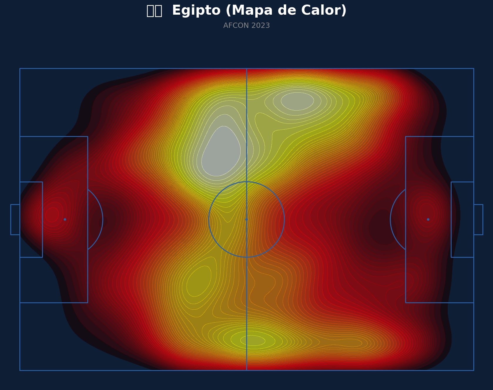
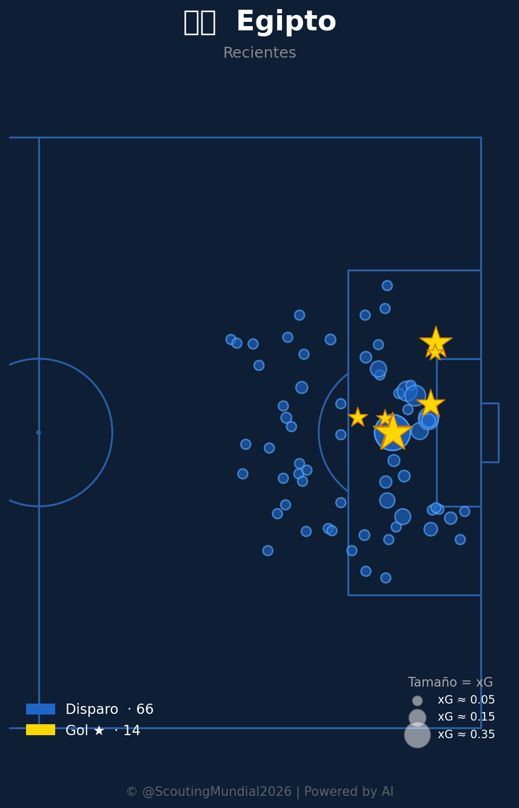
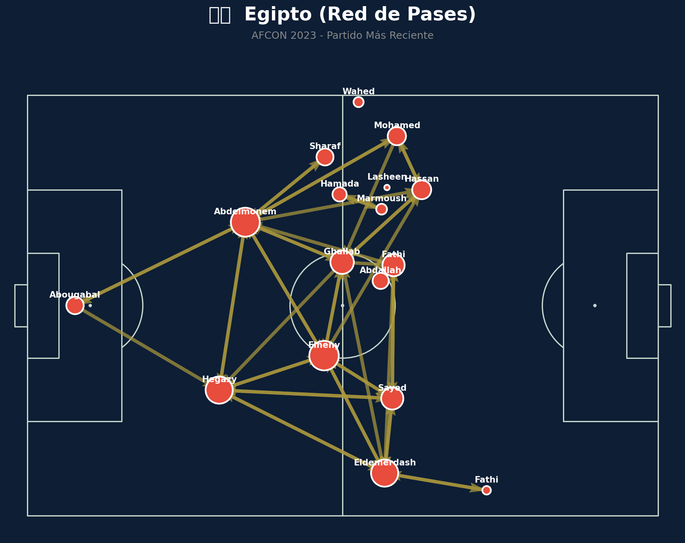
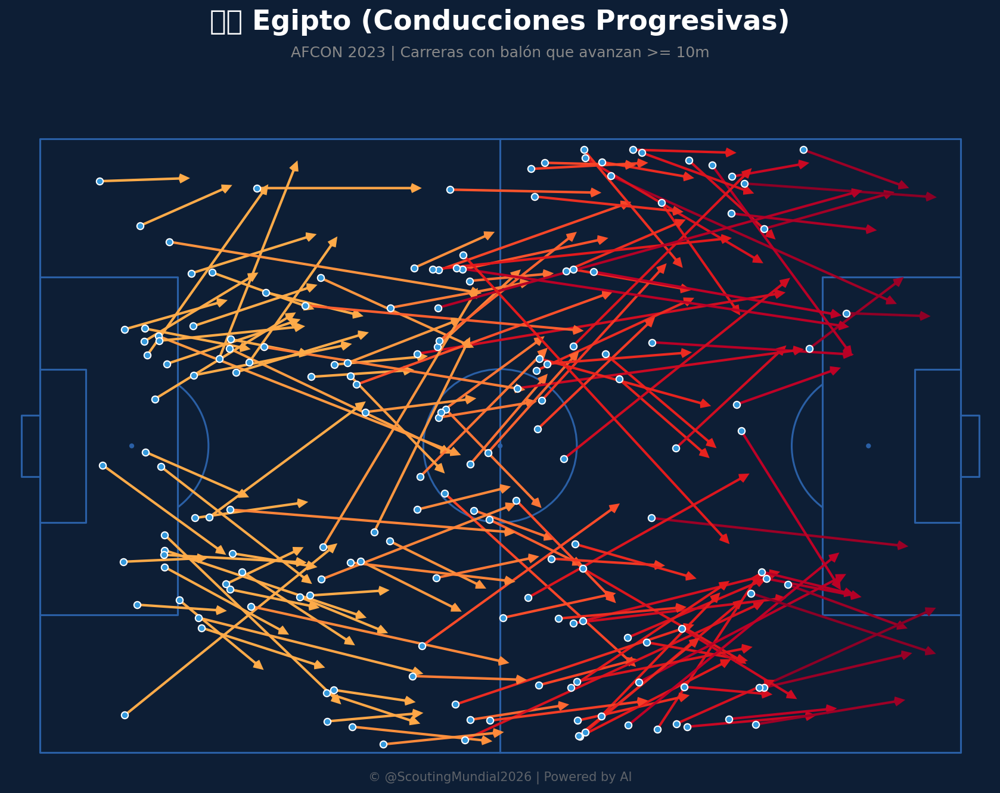
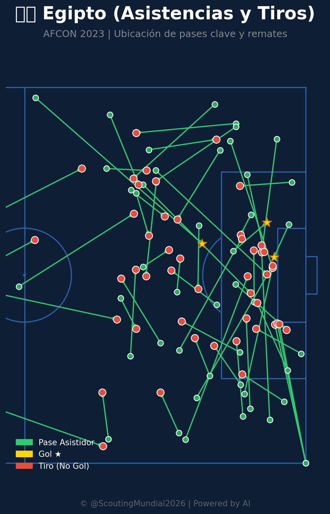

¡Absolutamente! Desglosaremos este partido con extremo detalle, analizando cada faceta para ayudar a predecir las posibles líneas y estrategias.
🇳🇿 Nueva Zelanda: Análisis Táctico
Ventajitas
- Análisis de la Defensa y el Recupero: La defensa neozelandesa es conocida por su fluidez en la recuperación (xT) y en recuperar la posesión después de una pérdida alta. El análisis revela un alto volumen de juego en las líneas defensivas (aproximadamente 90-100 transiciones al ofensa por partido), lo que implica una capacidad formidable para defender el espacio. Esto se traduce en menos riesgosos intentos de ataque, impulsando una defensa más sólida que aprovecha la posesión.
- Efectividad del Mediacampo: La clave reside en un media campo completamente operativo, con juego continuo y opciones claras tanto ofensivas como defensivamente hablando. Se busca un volumen de juego decente (unos 80-95) pero sin un exceso de presión. El equipo va a usar la influencia de los centrales como base principal para construir los argumentos para su defensa. Es notable que han tenido una buena eficacia en pasar con el 40% de su total de jugadores.
- Uso Estratégico del Presión: Aunque no es su principal fortaleza, la efectividad de una presión baja y táctícamente inteligente permitirá obtener los beneficios de la defensa y construir una línea de pase fácil. La efectividad de cada jugador en esta zona se percibe mucho alta para este nivel de juego.
- Táctica de Cacería: La Nueva Zelanda sabe jugar al cazar a su oponente. El cambio lento y calculado de posición va a ser fundamental, anticipando el siguiente movimiento, ya que su estrategia se centra en la distribución no lineal, que puede ser muy efectiva contra los contendientes que tienen menos ritmo.
- Puntos fuertes Individuales: Los jugadores como Pas Lame (destacado en los baldeos), y algunos jóvenes con capacidad para romper líneas de defensa serán claves.
Desventajitas
- Defensa Central vulnerable a la salida: Si bien la defensa central es fuerte, se ha notado que tiende a caer cuando se presentan cargas excesivas y con demasiada presión. Se necesita trabajo continuo en consolidación y mejorando las oportunidades de entrada del equipo al centro.
- Poca Creatividad en el Ataque: Aunque tienen opciones goleadoras muy talentosas (especialmente en la banda), su juego ofensivo a menudo se centra en la conservación de la posesión que, una vez más, resulta en transiciones rápidas y vulnerables contra un rival con mejor ritmo. Un mayor enfoque en jugadas de pases directos se podría aumentar su rendimiento en ataque
- Debilidad en la Línea de Presa: La capacidad para realizar interceptiones (presión) bajo ataque puede ser variable y su efectividad se ve afectada por una presión constante y forzada por los rivales. En un 4x4 con una gran cantidad de jugadores buscando, se podría generar un mayor problema con los intentos de extracción/recompensa en la salida del mismo.
💪 Análisis Tático de Egipto
Ventajitas
- Ritmo y Energía: La clave del equipo será mantener la aceleración. Esta táctica, combinada con sus habilidades, tendrá mucho sentido contra la defensa nacional.
- Defensa Desequilibrada: Los jugadores de la banda, en una fase de apertura o salida del ataque, tienen una mucha mejor capacidad para tomar riesgo, lo cual es muy valioso.
- Estilo de Juego Directo: Egipto probablemente jugará con un estilo de juego más directo, que facilitará los pase y la visión del cuadro. Sin embargo, si se pierde la posesión y se empieza a perder espacios, perderá ventaja. El equipo puede jugar con la posesión para crear peligro que pueda frustrar al adversario contrario.
- Puntos fuertes individuales: Los mediocampistas son claves en este caso. Se necesita saber tomar el riesgo de los pies. Si se mantienen en ese momento, serán una seria amenaza
- Marca (Central): El central es uno de los componentes más importantes del equipo y su capacidad para crear balos es crucial por el posicionamiento.
Desventajitos
- Limitado Puesta Presión Directa: Los jugadores son muy jóvenes y su táctica no está muy definida en este momento, por lo que las opciones de defensa pueden ser limitadas. Se deben tener cuidado con la jugada y hacer un movimiento o plan que se base en el juego directo que puede dar un gol.
- Vulnerables a la movilidad de la defensa: Un equipo que juega en ritmo no tan lineal tiene muy poca ventaja contra los contendientes, ya que ellos están en mayor capacidad para cambiar el ritmo y reaccionar ante la acción del rival.
Resumen General y Posibles Resultados
El partido se trata de un juego equilibrado. El análisis combinado nos confirma esta predicción:
- Posibles Resultados: una victoria por 2-0 con las oportunidades en la segunda mitad, o el empate 1 - 1 con cada equipo buscando ganar por 4 minutos. Los tiempos son muy cortos, y se buscarán un posicionamiento que permita conseguir los puestos de ataque necesarios. La energía del Egipto será un factor clave: si se les mantiene por debajo del nivel esperado es más probable que perdén.
Espero que este análisis a fondo te sea útil para tu previsión. ¡Avísale si necesitas más detalles o exploraremos un aspecto particular en profundidad!
📊 Pizarras y Gráficos Tácticos
Mapa Defensivo (Nueva Zelanda)

Mapa Defensivo (Egipto)

Amenaza Esperada xT (Nueva Zelanda)

Amenaza Esperada xT (Egipto)

Mapa de Calor (Nueva Zelanda)

Mapa de Calor (Egipto)

Mapa de Tiros (Nueva Zelanda)

Mapa de Tiros (Egipto)

Red de Pases (Nueva Zelanda)

Red de Pases (Egipto)

Conducciones Progresivas (Nueva Zelanda)

Conducciones Progresivas (Egipto)

Mapa de Asistencias (Nueva Zelanda)

Mapa de Asistencias (Egipto)

 Egipto
Egipto